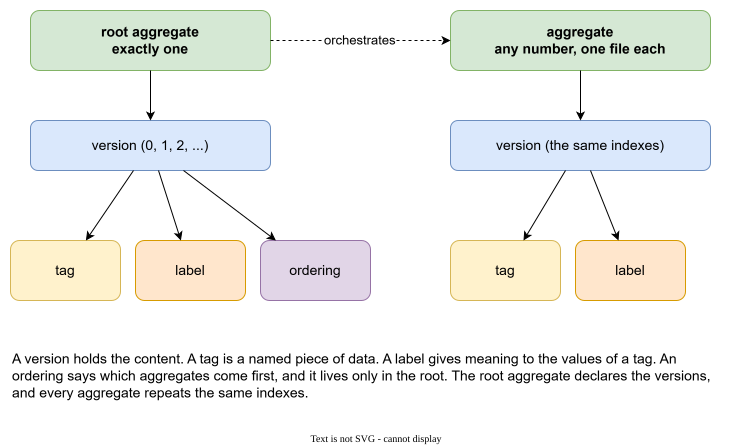
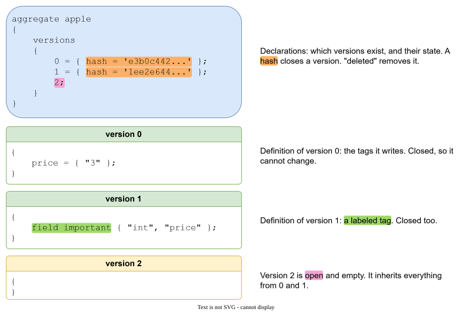

Entities¶
GaL is a very simple, declarative language that looks like JSON, with a small set of entities on purpose. Anything else you need is built from tags. A GaL file is plain text, and all the state of a project is in such files: there are no binaries and no database, so a project lives in git like any other text.

| Entity | What it is | Belongs to | How many |
|---|---|---|---|
| root aggregate | The top of the description. It lists the versions and orchestrates the aggregates. | nothing | exactly one |
| aggregate | A named group of tags. One message, one table, one setting group. | the root, through versions | any number, one file each |
| version | The content of an aggregate at one moment. | an aggregate | many |
| tag | A named piece of data. The main entity. | a version | many |
| label | Gives meaning to the values of a tag. | a version | many |
| ordering | Says which aggregates come before which. | a root version | many |
The problem each one solves¶
Aggregate. A description with a hundred items in one file is hard to read and hard to merge. Each aggregate lives in its own file, so a change to apple is a change to apple.gal, and two people rarely edit the same file.
Root aggregate. Items often share settings: a currency, a namespace, a flag that says "published". You do not want to repeat them. A tag written in the root flows into every aggregate (see Aggregates and versions).
Version. Data changes, and the old state must stay available. A version is a numbered state. The root says which versions exist, and every aggregate repeats the same indexes.
Tag. The unit of data: a name and values. A tag is not typed by the language. Strings, records and arrays are enough. The meaning is yours.
Label. A tag often needs more than a value: a type and a name, a default, a flag. Labels give structure to values without adding keywords to the language. A label says: the first value is the type, the second is the name. See Labels.
Ordering. Files have no natural order, and generated output often needs one: a type before the types that use it. An ordering says it in the data. See Ordering.
What you can do with an entity¶
Every entity has a life: it is created, it changes, it may be deleted. GaL keeps this small and clear.
| Entity | Create | Update | Delete |
|---|---|---|---|
| root aggregate | wizard create root aggregate |
wizard create version |
not possible, the root stays |
| aggregate | aggregate Name { ... } or wizard create aggregate |
wizard create version |
delete; in a version (history stays), or wizard delete aggregate with physically |
| version | version N { } or wizard create version |
by tags, and by a hash that closes it | wizard delete version, wizard collapse version |
| tag | a = { ... }; |
a = { ... }; in a later version |
delete a; |
| label | label name = ...; |
a later statement of the same name wins | not possible, a label name is final |
| ordering | ordering name = { ... }; |
a later statement of the same name wins | not possible |
Two kinds of delete are worth knowing:
- Historical delete writes
delete;ordelete a;into a version. The history stays in the file. The compiled view drops what was deleted from that version on. - Physical delete removes the file, or removes a version from every aggregate. It is refused while a closed version still holds the aggregate, and it only removes open versions. It is for a draft that never shipped, or for a mistake.
Where entities are written¶
An aggregate is a file. A file has two parts:

The first part is the declaration: which versions exist, which are closed (a hash), which are deleted. The second part is the definitions: one block per version with the tags it writes.
aggregate apple
{
versions
{
0 = { hash = 'e3b0c442...' };
1 = { hash = '1ee2e644...' };
2;
}
}
version 0
{
price = { "3" };
}
version 1
{
field important { "int", "price" };
}
version 2
{
}
field in version 1 is a label that the root declares (see Labels). version 2 is open and empty. It inherits everything from 0 and 1 (see Aggregates and versions).
The root aggregate has the same shape with the word root: root aggregate shop { versions { ... } }. The root file may also hold labels and orderings.
Names¶
An aggregate or tag name is a letter followed by letters, digits and underscores: apple, hello_world, version_number. Names of aggregates must be unique, ignoring case. By convention aggregate names and file names are lowercase, so that apple.gal is never confused with Apple.gal on a system that cares about case. The name of the root aggregate does not matter to the data. The word comment and the other words of the language are reserved (see the Reference).
Strings use "..." or '...'. A raw string R"(...)" keeps every character as written. Comments are // ... and /* ... */.